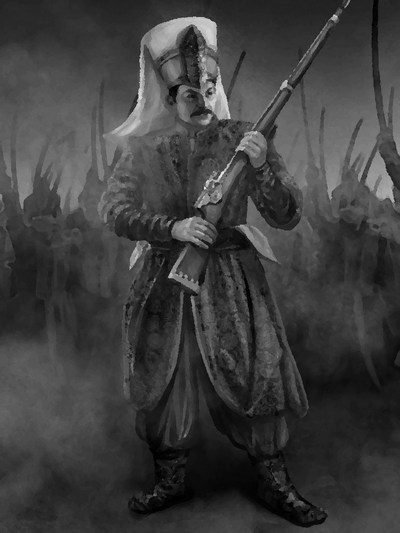

Османская империия. XXI век.

Описание товара
VR-Event из раздела "Альтернативная история" с использованием камеры сенсорной депривации и импрегнации сензитивных ощущений
Характеристики товара
- Продолжительность: 1 день в реальности = 3 года в VR.
- Место квеста: Лаборатория ментальных импрегнаций клуба/Весь мир
- Сложность: лёгкая.
Подробное описание товара
Алтернативная история, а что будет если... Отправной точкой служит экспансия и развитие Османской империи без упадка.
Удивительное сочетание красивейших нарядов и фантастического оружия (бластеры, гравиколесницы, нейролуки)
Совершенно открытый мир в VR, сценарии развития событий непредсказуемы, генерируются нейронной сетью Riflesia
Импрегнация сензитивных переживаний осуществляется после прохождения камеры сенсорной депривации на пике возникающих галлюцинаций.
Полное погружение, за счет чего физическое время расстягивается в виртуальном мире в разы. 8 часов в сензокостюме = 365 дней в виртуальности (1 год)
Начальная комплектация исходных материалов и стартового статуса зависит от статуса Ивентодержателя в клубе.
Обратите внимание! Необходима первичная подготовка для управления сензокостюмом и импрегнации ощущений.
Условия доставки
Ивентодержатель для сохранения тайны местонахождения Лаборатории:
- должен сдать все гаджеты и электронные устройства, определяющие местоположение
- может быть обследован на наличие вживленных устройств слежения
Обеспечение безопасности
Ивентоисполнитель обеспечивает безопасность игрока снабдив место Ивента и Ивентодержателя следующими устройствами:
- Ракетница с сигналами зеленого цвета
- Ракетница с сигналами красного цвета
- Кнопка экстренного "извлечения"
Для сохранения аутентичности происходящего, данные объекты являются неизвлекаемыми и неотделяемыми от инвентаря Ивентодержателя в любое время и не занимают активных ячеек.
© 2019 ncux11. Все права защищены
© 2019 ncux11. All rights reserved.